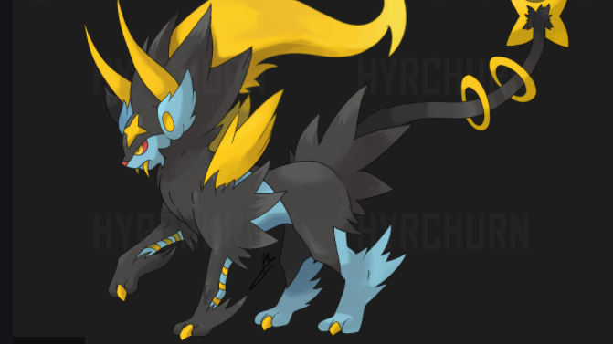

Mega Charizard X is a Fire/Dragon type Pokémon, which makes it weak against Ground, Rock and Dragon moves.powers Blaze: Charizard's usual Ability, which boosts the power of his Fire-type moves when its health is low. Solar Power: Charizard's Hidden Ability. When a Charizard with this Ability is exposed to harsh sunlight, his Special Attack power rises, at the cost of its health slowly lowering over the course of the fight. Flight: Using its mighty wings, Charizard can fly up to 4,600 feet into the air.

It is a large panda pokemon that evolves from the lovable panda pokemon Pancham. It is Fighting/Dark type and evolves via level 32 as long as theres a dark type pokemon in your party. However, despite its dark attributes, it is said to have a heart of gold and doesnt allow anyone to bully the weak.powers iron fist Powers up punching moves. Generation VIII. Powers up punching moves. Iron Fist (Japanese: てつのこぶし Iron Fist) is an Ability introduced in Generation IV. Prior to Generation V, it was the signature Ability of Hitmonchan.mold breaker Moves can be used on the target regardless of its abilities

Mega Umbreon is an Exclusive Pokémon released as part of the twenty-third Mass-Click Weekend. It was released on the 27th of June 2016 and was released in the form of a Mega Stone.

Luxray can see through solid objects. It will instantly spot prey trying to hide behind walls, even if the walls are thick.
Grapploct is a blue, amphibious, octopus-like Pokémon with a yellow jagged eyemask-like marking, suckers, and what appears to be a breathing organ on the ...

The Beast Ball (Japanese: ウルトラボール Ultra Ball) is a type of Poké Ball introduced in Generation VII. It can be used to catch a wild Pokémon, being more likely to succeed against Ultra Beasts and less likely against other Pokémon.

1.Mega Charizard Tough Claws: Mega Charizard 's Ability, which boosts the power of moves it uses that make contact with the opponent. 2.Mega Luxray Luxray has powerful eyesight that is capable of seeing through most objects and walls, like X-ray vision. It uses this ability for hunting and keeping track of its offspring. However, this ability requires a lot of electricity to use. 3.Mega Umbreon When a Pokémon with Synchronize is burned, paralyzed, or poisoned by another Pokémon, that Pokémon will be inflicted with the same status condition. Synchronize will not inflict sleep or freeze. 4.Mega Grapploct Superpower is a Fighting-type Main move in Pokémon GO that deals 85 damage and costs 50 energy. It is strong against Normal, Rock, Steel, Ice and Dark Pokémon and weak against Flying, Poison, Bug, Psychic and Fairy Pokémon. 5.Mega Pangoro Body Slam inflicts damage and has a 30% chance of paralyzing the target. It cannot paralyze Normal-type Pokémon. 6.Beast Ball The Beast Ball (Japanese: ウルトラボール Ultra Ball) is a type of Poké Ball introduced in Generation VII. It can be used to catch a wild Pokémon, being more likely to succeed against Ultra Beasts and less likely against other Pokémon.
1.Mega Charizard 2.Mega luxray 3.Mega Umbreon 4.Mega Grapploct 5.Mega Pangoro 6.Beast Ball
TO SEE THE NEXT PAGE CLICK ONE TIME ON THE 'NEXT' TEXT GIVEN BELOW